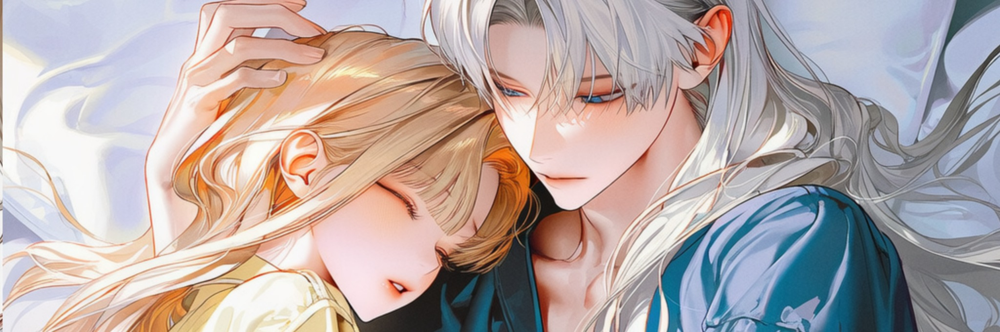
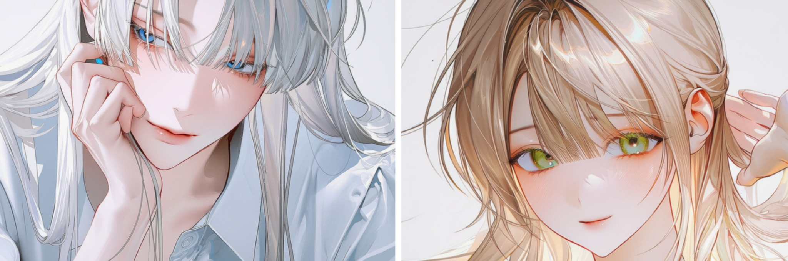

닉네임
한바다 드림 계정
11°22′N 142°35′E · 마리아나 해구
haeil.love
아 래 로 내 려 갑 니 다
- 0 8 4 0 0 M · 8 3 4 B A R · 1 ~ 4 ℃
해 구 하 부
한바다 · SS급 센티넬 · 물의 군주
감각이 닿는 범위를 재보라는 말을 들으면 웃는다. 재본 적이 없어서가 아니라, 재려고 들면 늘 물이 먼저 끝났기 때문에.
- 1 0 9 3 5 M · 1 0 8 6 B A R
각 인
한바다는 자기 감각이 어디까지 뻗어 있는지 세어본 적이 없다. 셀 필요가 없었으니까. 온새벽이 손을 얹은 날에야 처음으로, 물이 여기서 끝난다는 걸 알았다.
해 저 도 달 · haeil.love